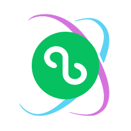
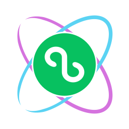
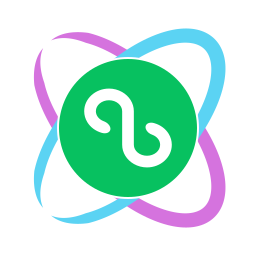

A0 / 原版对照
对照

原先采用的双轨环抱。轮廓较高，轨道带渐隐尖端，内部标记随背景变化。
64 px32 px24 px16 px保留绿色圆标与青紫双轨，调整重心、间距与小尺寸表现。
对照
原先采用的双轨环抱。轮廓较高，轨道带渐隐尖端，内部标记随背景变化。
64 px32 px24 px16 px已采用 · 保留官方路径

收紧外轮廓，增大中心圆标；轨道使用实色，白色标记不随背景变化。
曲率重绘

重新梳理两条轨道的曲率与视觉重量，左右呼应；留出清晰的环抱间隙。
小尺寸优先

中心圆标更大、轨道更厚；以更短的尖端提高头像与图标的识别度。